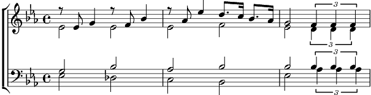

1. Y’a un grillon dans la maison
Y’a un grillon qui chante une chanson
Y’a un grillon sous le charbon
Y’a un grillon qui est beau, qui est bon
Y’a un grillon qui dit que l’hiver
C’est un rayon sous un feu de bois vert
Y’a un grillon qui dit que l’amour
Ça vient toujours un jour
Et je suis sorti dans la rue
Et soudain tu m’es apparue
Et depuis, depuis ce beau temps
Nous nous chantons tous deux le coeur content
2. Y’a un grillon dans la maison
Y’a un grillon qui chante une chanson
Y’a un grillon sous l’édredon
Y’a un grillon qui est beau, qui est bon
Y’a un grillon qui dit que l’hiver
C’est un rayon sous un feu de bois vert
Y’a un grillon qui dit que l’amour
Ça vient toujours un jour
Et depuis, le temps passe
Il s’enfuit, s’enfuit dans les glaces
Mais qu’importe la fuite du temps
Autour de nous il y a beaucoup d’enfants
3. Y’a des grillons dans la maison
Y’a des grillons qui chantent des chansons
Y’a des grillons en toute saison
Y’a des grillons qui sont beaux, qui sont bons
Y’a des grillons qui disent que la vie
C’est un fleuron qui toujours refleurit
Y’a des grillons qui disent que l’amour
Ça peut durer toujours
Y’a des grillons dans la maison
Y’a même... un négrillon.